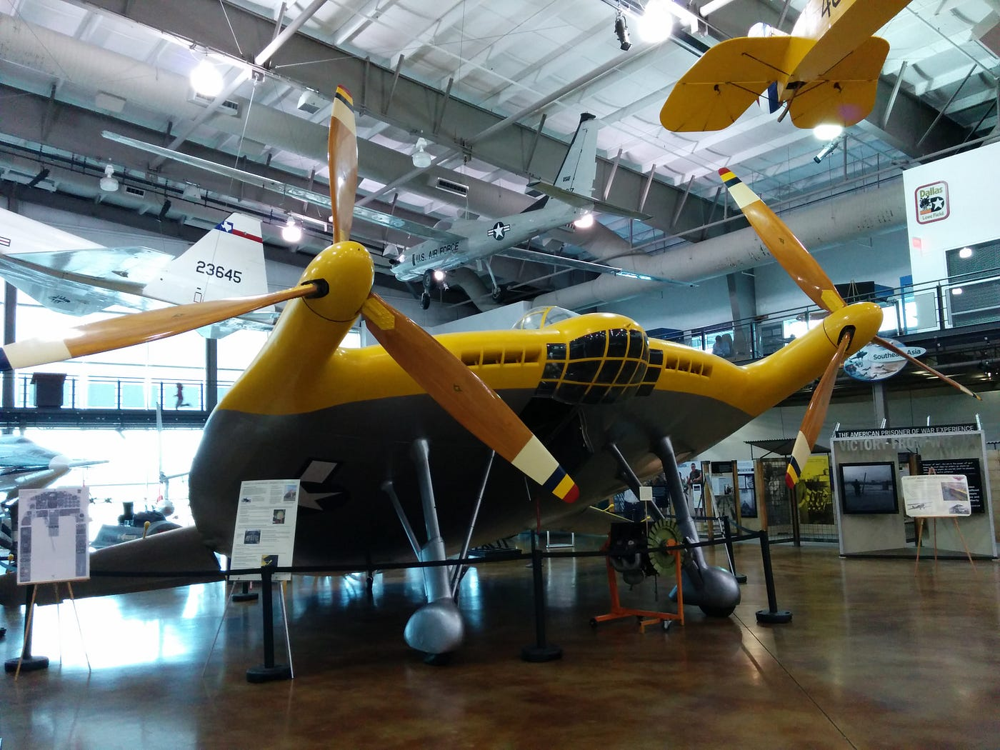

Bem-vindo ao nosso museu virtual! Este site foi criado para apresentar alguns dos veículos mais curiosos, experimentais e incomuns desenvolvidos durante a Segunda Guerra Mundial. Muitos desses projetos foram idealizados para oferecer vantagens estratégicas, enquanto outros nunca passaram da fase de testes.
Aqui você encontrará veículos terrestres e aéreos que chamam a atenção pelo tamanho, formato e tecnologias utilizadas. Cada projeto possui uma breve descrição, curiosidades e informações históricas para ajudar a entender seu propósito e sua importância no contexto da guerra.
Nosso objetivo é compartilhar conhecimento de forma simples e organizada, mostrando como a engenharia militar da época deu origem a algumas das máquinas mais impressionantes e inusitadas já construídas. Explore as categorias do menu acima e descubra essas curiosidades da história.
